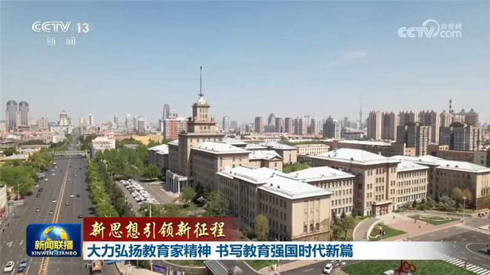
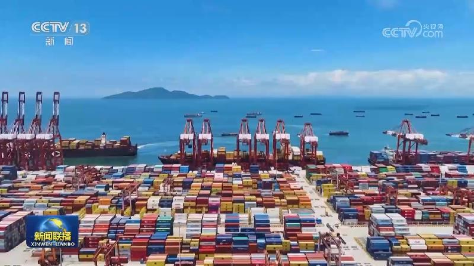
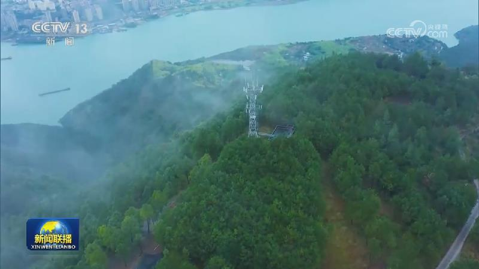
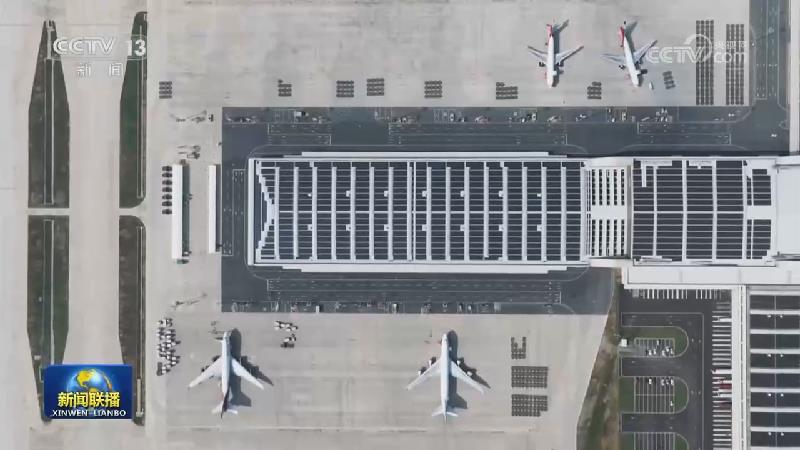
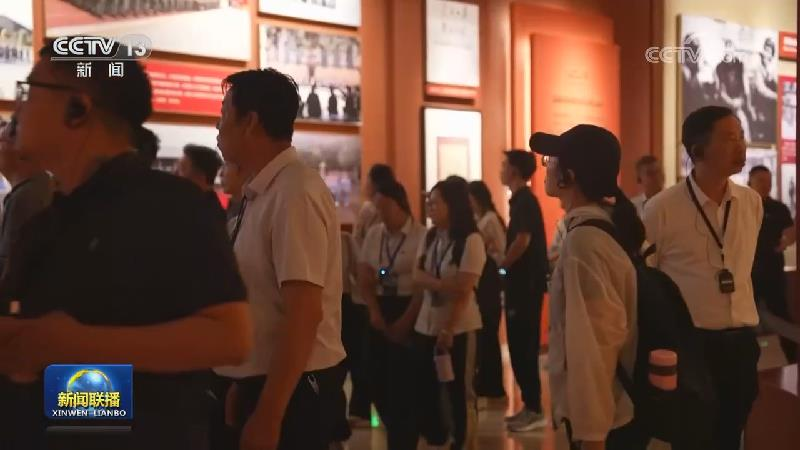
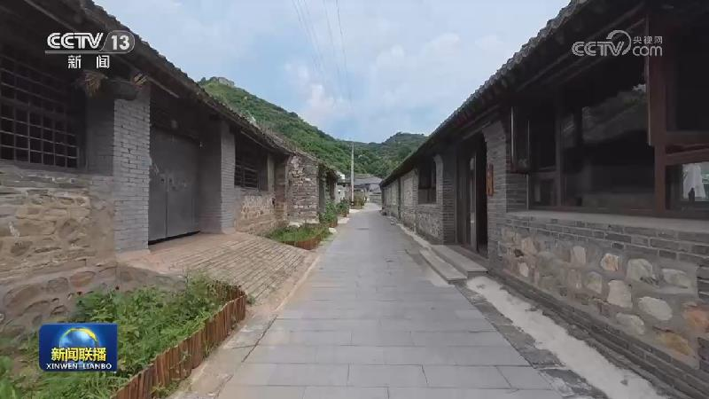
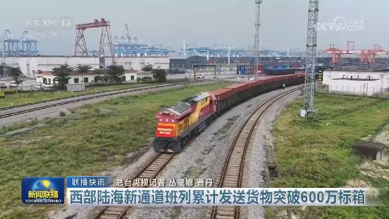
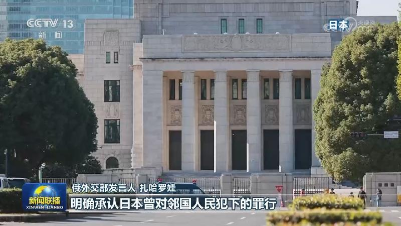
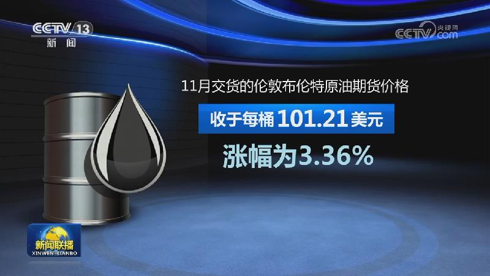
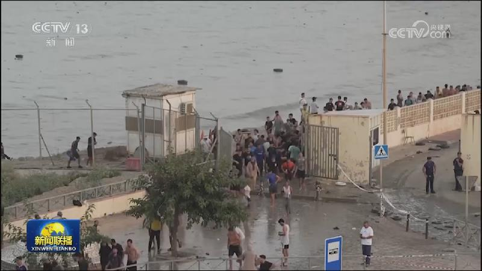

01
习近平对山东青岛市北海造船厂一货轮火灾事故作出重要指示强调 深入排查整治各类火灾隐患 落实落细防范措施 坚决遏制重特大事故发生 李强作出批示
9月10日11时15分许，山东青岛市北海造船有限公司一艘外籍货轮靠港维修期间起火，造成重大人员伤亡。

9月10日11时15分许，山东青岛市北海造船有限公司一艘外籍货轮靠港维修期间起火，造成重大人员伤亡。
应印度共和国总理莫迪邀请，国家主席习近平将于9月12日至13日赴印度新德里出席金砖国家领导人第十八次会晤。

在第四十二个教师节到来之际，习近平总书记代表党中央，向全国广大教师和教育工作者致以节日祝贺和诚挚问候。总书记指出，长期以来，全国广大教师认真贯彻党的教育方针，躬耕教坛、传道授业，为党和国家事业发展作出了重要贡献。广大教师和教育工作者表示，一定将总书记的勉励化作前行动力，为培养更多担当民族复兴大任的时代新人不懈奋斗。

国务院新闻办公室今天（9月10日）举行“开局起步‘十五五’”系列主题新闻发布会，中国人民银行、金融监管总局、中国证监会、国家外汇局介绍金融领域贯彻落实“十五五”规划、推动金融强国建设有关情况。
正在举行的2026年服贸会上，一大批新技术新成果集中发布，吸引全球客商纷至沓来，共觅合作机遇。
记者从商务部了解到，今年以来，全国新增84个重点外资项目，总投资额194.6亿美元，涉及机电装备、化工能源、汽车、医疗健康等领域。一批投资规模大、技术先进性强的重点外资项目加快落地。

工业和信息化部日前发布《信息通信行业发展“十五五”规划》（以下简称《规划》），明确到2030年，我国将全面建成覆盖完善、性能领先的新一代通信网，并提出到2030年，信息基础设施累计投资3.8万亿元，智能算力规模达每秒9800百亿亿次浮点运算，5G（含5G-A）用户普及率达95%等13项具体指标。

海关总署近日发布2025年中国与其他金砖成员国贸易指数。2025年上升至334.14，较2024年提升32.64，实现连续10年向上攀升。
在第42个教师节到来之际，中央宣传部、教育部向全社会发布2026年“最美教师”先进事迹。万勇善、马天祥、马超群、马翠玲、王文科、王永贵、王庆、王如竹、王振、文韬、冯英巧、刘桂华、刘雪雅、李志军、汪洋、沈泽花、张福锁、林茂、赵羲、侯光良、郭绍青、崔玉秋、章振乐、彭艳峰、斯郎平措等25名同志光荣入选。他们全面贯彻党的教育方针，落实立德树人根本任务。……

今天（9月10日），国家文物局在江西赣州发布全国革命文物保护利用最新成果。截至目前，我国已构建起覆盖全国、脉络清晰、重点突出的红色资源保护新格局，37个革命文物保护利用片区，覆盖全国1433个县（市、区）。自2019年开展片区建设以来，累计实施革命文物保护展示工程3000余项，革命文物重大险情基本消除。1300个主题纪念馆举办超2000个革命文物主题展览，5亿人次观众瞻仰先辈伟绩，感受红色精神。

长城不仅承载着千百年的历史沧桑，更滋养着周边深厚的文化。在河北秦皇岛燕山腹地的界岭口，明长城“金台”“银台”隔河守望600年。2020年，界岭口长城被列入第一批国家级长城重点段。在系统保护与活态传承中，巍峨长城与古老村落共同焕发出穿越岁月的生机与活力。

国际打击电信网络诈骗联盟成立

针对日本要求俄罗斯拆除日前落成的战胜军国主义日本的纪念碑，俄罗斯外交部发言人扎哈罗娃9日表示，俄方建议日本认真反省其侵略历史，明确承认其战争罪行。

美国总统特朗普9日说，他认为美国同伊朗的战事将在11月美国国会中期选举后“立即结束”。他还称，美方目前不考虑同伊朗谈判。另据美国媒体同一天报道，白宫高级官员与特朗普讨论了伊朗可能在美国的封锁和军事压力下继续抵抗，这或许会造成冲突持续至特朗普总统任期结束。

沙特与胡塞武装打击对方目标